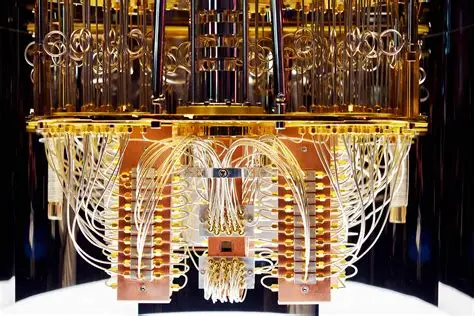
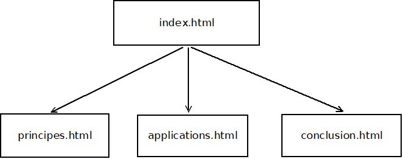

Informatique Quantique
Introduction a l'informatique quantique
L’informatique quantique est le sous-domaine de l’informatique qui traite des calculateurs quantiques et des modèles de calcul associés. L’informatique quantique utilise des phénomènes décrits par la mécanique quantique, comme l’intrication quantique ou la superposition quantique, tandis que l’informatique dite « classique » n’exploite que des phénomènes décrits par la physique classique, tels que l’électricité (ex. : transistor) ou la mécanique classique (ex. : machine analytique). Les opérations n’y reposent plus sur la manipulation de bits dans un état 1 ou 0, mais de qubits en superposition d’états 1 et 0.
Un ordinateur quantique, calculateur quantique, processeur quantique [3], [4] ou système informatique quantique [5], utilise les propriétés quantiques de la matière, telles que la superposition et l’intrication, afin d’effectuer des opérations sur des données. À la différence d’un ordinateur classique basé sur des transistors travaillant sur des données binaires (codées sur des bits, valant 0 ou 1), l’ordinateur quantique travaille sur des qubits dont l’état quantique peut posséder plusieurs valeurs, ou plus précisément une valeur quantique comportant plusieurs possibilités simultanées [6].

Plan du site

Public visé
Ce site s’adresse principalement aux étudiants et aux personnes souhaitant découvrir les bases de l’informatique quantique sans prérequis avancés.